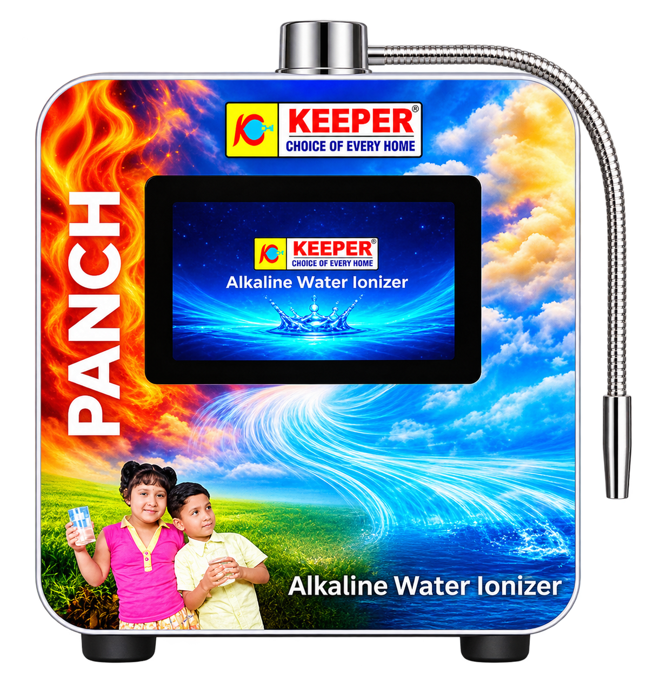

KEEPER Panch Series
Next-Gen Alkaline Water Ionizer for Purified, Mineral-Rich & Antioxidant Water
View Details →
PANCH SERIES – Specifications
Model Variants: PANCH 7 / PANCH 9 / PANCH 11
Display: 10 Inch Touch Screen Digital Display
Number of Plates: 7 / 9 / 11 (Model Based)
Technology: Electrolysis with Enhanced Mesh Plate Design
Power: 0–450 Watts
Mount Type: Wall Mount / Countertop
Compatible Input: KEEPER RO Water (TDS 50–120 ppm)
Model Name & Design
Model Name: PANCH (Available in 7, 9 & 11 Plates)
Body Color & Design: Energy-inspired design representing the balance of Panch Mahabhut – Earth, Water, Fire, Air and Ether, infused through colors and contours for modern kitchens.
Electrolysis Process
Electrolyzing Power: 0–450 Watts
Advanced Electrolysis System: Designed for stable ionization.
Five Elements of PANCH
- Earth – Stability
- Water – Purity
- Fire – Energy
- Air – Vitality
- Ether – Balance
Water Output Modes
- pH 7 & 7.5 – Beginner level & Medicine
- pH 8.5 – Daily hydration
- pH 9.5 – Detox & active lifestyle
- pH 10.5 & 11.5 – Cleaning fruits, vegetables, rice & disinfectant
- Beauty Water (~pH 5.5) – Skin & Hair Rinse
- Acidic Water – Cleaning surfaces, minor disinfection
- RF Mode – Reverse Flushing / Self-Cleaning
Model Numbers
KW-INZ-PANCH-7, KW-INZ-PANCH-9, KW-INZ-PANCH-11
Technology Advantages
Mesh-type plates create zig-zag water movement, increasing contact time for better ionization, stronger ORP and enhanced antioxidant properties.